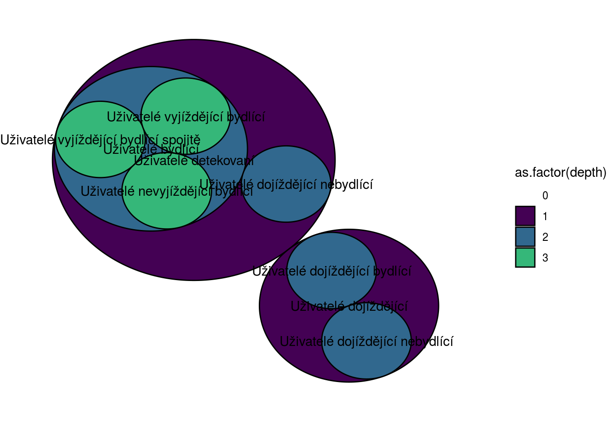
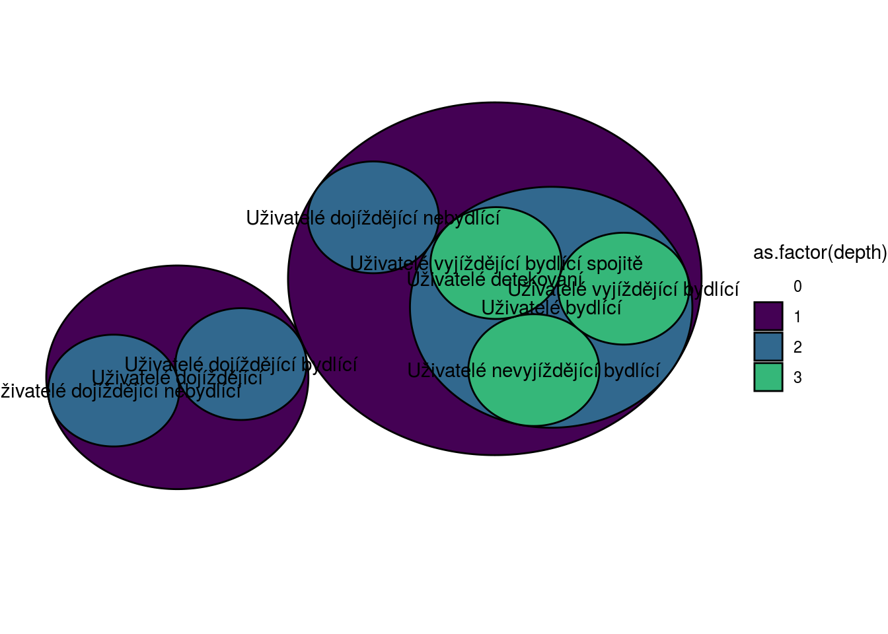
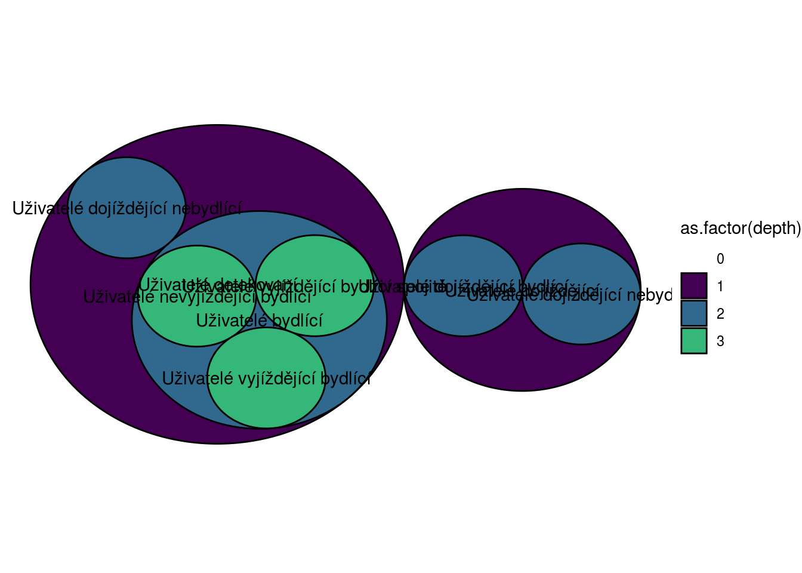

Chapter 4 Image produced within knit
In order to obtain this type of graph, it was necessary to create two Excel files. A first named circle-packing that let you know which group is nested in which (usually named Edges with two columns that are from and to). The second one named circle-packing-vertices contains the description of each group. I had to trace 12 different circle-packings about the dataset presented below.
# import dataset
sizes <- readr::read_csv("~/boodatcat/dataVenn/ven_tes/alluse_1561618049942.csv")
# scale_down allows to print the whole table and hold_position allows to print it where it is created.
kable(sizes, booktabs = TRUE, caption = 'Table for Venn Diagrams')| reg | tmd | detuse_alluse_d00 (SUM) | rescyc_alluse_d00 (SUM) | inccyc_alluse_d00 (SUM) | inrcyc_alluse_d00 (SUM) | inucyc_alluse_d00 (SUM) | norcyc_alluse_d00 (SUM) | nopcyc_alluse_d00 (SUM) | ourcyc_alluse_d00 (SUM) |
|---|---|---|---|---|---|---|---|---|---|
| nu33026 | 2018-07-04 | 595846 | 478935 | 401555 | 284644 | 116911 | 85464 | 70449 | 323022 |
| nu33140 | 2018-07-04 | 641569 | 507323 | 496487 | 362241 | 134246 | 70138 | 63008 | 374177 |
| nu33026 | 2018-08-01 | 623262 | 520775 | 409075 | 306588 | 102487 | 92328 | 77181 | 351266 |
| nu33140 | 2018-08-01 | 641492 | 524217 | 486034 | 368760 | 117275 | 74550 | 68201 | 381466 |
| nu33026 | 2018-09-05 | 615152 | 516945 | 415656 | 317449 | 98207 | 74539 | 64747 | 377659 |
| nu33140 | 2018-09-05 | 647348 | 526003 | 514544 | 393198 | 121346 | 60549 | 58766 | 406688 |
| nu33026 | 2018-10-03 | 627862 | 545354 | 413756 | 331249 | 82507 | 80697 | 67544 | 397113 |
| nu33140 | 2018-10-03 | 678626 | 582897 | 525132 | 429403 | 95729 | 72374 | 64783 | 445740 |
| nu33026 | 2018-11-07 | 612476 | 531679 | 407201 | 326404 | 80797 | 75259 | 62872 | 393548 |
| nu33140 | 2018-11-07 | 680578 | 583170 | 531797 | 434389 | 97408 | 70385 | 62974 | 449810 |
| nu33026 | 2018-12-05 | 615054 | 536179 | 404645 | 325770 | 78875 | 75692 | 65473 | 395014 |
| nu33140 | 2018-12-05 | 679157 | 581054 | 523001 | 424898 | 98103 | 74475 | 65457 | 441122 |
4.1 First row
Here is presented the code and the result obtained by processing the first line of the dataset :
source("traceVennDiagramm.R")
# import of the edges
tableau <- data.frame(readxl::read_excel("~/boodatcat/circle-packing.xlsx"))
sizes[11] = sizes[3] + sizes[5]
# traduction of the column names
colnames(sizes)[3]=tra.str.F('detuse','namwri')
colnames(sizes)[4]=tra.str.F('rescyc','namwri')
colnames(sizes)[5]=tra.str.F('inccyc','namwri')
colnames(sizes)[6]=tra.str.F('inrcyc','namwri')
colnames(sizes)[7]=tra.str.F('inucyc','namwri')
colnames(sizes)[8]=tra.str.F('norcyc','namwri')
colnames(sizes)[9]=tra.str.F('nopcyc','namwri')
colnames(sizes)[10]=tra.str.F('ourcyc','namwri')
colnames(sizes)[11]='Origin'
pic <- traceVennDiagramm(sizes, 1) # create circle-packing
pic
Figure 4.1: First line processed
This is the script of traceVennDiagramm :
traceVennDiagramm = function(sizes,ligne){
x=seq(3:11)
# transforme the line into a column
for(j in seq(3:11)){
x[j]=sizes[ligne,j+2]
}
# creation of the vertices table
vertices=data.frame(cbind(cbind(colnames(sizes)[3:11],x),colnames(sizes)[3:11]))
vertices[9,3]=' ' # we don't want to see the origin label
colnames(vertices)[3]='shortName' # rename the third column
colnames(vertices)[2]='size' # rename the second
mygraph <- igraph::graph_from_data_frame(tableau, vertices=vertices)
# creation of the graph
return(ggraph::ggraph(mygraph, layout = 'circlepack') +
ggraph::geom_node_circle(ggplot2::aes(fill = as.factor(depth), color = as.factor(depth)), position = "jitter") +
ggraph::geom_node_text(ggplot2::aes(label=shortName)) +
# we fill manually the colors
ggplot2::scale_fill_manual(values=c("0" = "white", "1" = viridis::viridis(4)[1], "2" = viridis::viridis(4)[2], "3" = viridis::viridis(4)[3]))+
ggplot2::scale_color_manual(values=c("0" = "white", "1" = "black", "2" = "black", "3" = "black")) +
ggplot2::theme_void() # our theme is applied
)
}Below are presented the two Excels. The vertices table corresponds to the first row of the data provided. As we can see, the Excel circle-packing contains the structure of the circles, how they are nested. The Excel circle-packing-vertices contains the size of each circle for the first row and its shortname, which will be plot in the final result. Here, the shortname is the same than the name but it can be different.
| from | to |
|---|---|
| Origin | Uživatelé detekovaní |
| Origin | Uživatelé dojíždějící |
| Uživatelé detekovaní | Uživatelé dojíždějící nebydlící |
| Uživatelé detekovaní | Uživatelé bydlící |
| Uživatelé dojíždějící | Uživatelé dojíždějící nebydlící |
| Uživatelé dojíždějící | Uživatelé dojíždějící bydlící |
| Uživatelé bydlící | Uživatelé nevyjíždějící bydlící |
| Uživatelé bydlící | Uživatelé vyjíždějící bydlící spojitě |
| Uživatelé bydlící | Uživatelé vyjíždějící bydlící |
| V1 | size | shortName |
|---|---|---|
| Uživatelé detekovaní | 595846 | Uživatelé detekovaní |
| Uživatelé bydlící | 478935 | Uživatelé bydlící |
| Uživatelé dojíždějící | 401555 | Uživatelé dojíždějící |
| Uživatelé dojíždějící bydlící | 284644 | Uživatelé dojíždějící bydlící |
| Uživatelé dojíždějící nebydlící | 116911 | Uživatelé dojíždějící nebydlící |
| Uživatelé nevyjíždějící bydlící | 85464 | Uživatelé nevyjíždějící bydlící |
| Uživatelé vyjíždějící bydlící spojitě | 70449 | Uživatelé vyjíždějící bydlící spojitě |
| Uživatelé vyjíždějící bydlící | 323022 | Uživatelé vyjíždějící bydlící |
| Origin | 997401 |
4.2 Second row
Moreover, we can create another image because there are 12 possible results from the processing, one for each row of the dataset for the Venn Diagrams. In order to compare the differences between to row of the initial dataset, at least another image is needed. What will be compare? The size of their circles. In fact, the size of each circle will change according to the row we processed. So, the result for the second line is imported here:
pic <- traceVennDiagramm(sizes, 2) # create circle-packing
pic
Figure 4.2: Second line processed
The position of the purple circles are different than for the first circle-packing. There is many solutions possible in order to represent the circle. Each time, the script calculate the new center depending of the size of the circle. But, it chooses randomly one of the solution possible. This is why the purple circles have a different position. It will change each time the script is run. There is a way to avoid this fact. It is to save a picture when the circles are in the same position than the latter image saved. It can be necessary to run many times the code in order to get it. Once it is gotten, the user the save the image. He can print the images that he wants to compare and check that the sizes of the circles had changed. In chapter 5, there is an example of an imported image that used the first row of the dataset for the Venn Diagram.
| V1 | size | shortName |
|---|---|---|
| Uživatelé detekovaní | 641569 | Uživatelé detekovaní |
| Uživatelé bydlící | 507323 | Uživatelé bydlící |
| Uživatelé dojíždějící | 496487 | Uživatelé dojíždějící |
| Uživatelé dojíždějící bydlící | 362241 | Uživatelé dojíždějící bydlící |
| Uživatelé dojíždějící nebydlící | 134246 | Uživatelé dojíždějící nebydlící |
| Uživatelé nevyjíždějící bydlící | 70138 | Uživatelé nevyjíždějící bydlící |
| Uživatelé vyjíždějící bydlící spojitě | 63008 | Uživatelé vyjíždějící bydlící spojitě |
| Uživatelé vyjíždějící bydlící | 374177 | Uživatelé vyjíždějící bydlící |
| Origin | 1138056 |
As we can see, the sizes are differents between the two circle-packing-vertices. It is also the case between the two images generated. These two results represents only 17% of the ensemble of results. So, in order to have a better representation, others results need to be present in this report.
4.3 Third row
In order to represent at least 25% and having a representative sample of the possible results, it was necessary to show another result. So the result of the third line is drawn right in the next page. Of course, the vertices table is needed in order to verify the size of the circles. So it is plot after the circle-packing.

Figure 4.3: Third line processed
| V1 | size | shortName |
|---|---|---|
| Uživatelé detekovaní | 623262 | Uživatelé detekovaní |
| Uživatelé bydlící | 520775 | Uživatelé bydlící |
| Uživatelé dojíždějící | 409075 | Uživatelé dojíždějící |
| Uživatelé dojíždějící bydlící | 306588 | Uživatelé dojíždějící bydlící |
| Uživatelé dojíždějící nebydlící | 102487 | Uživatelé dojíždějící nebydlící |
| Uživatelé nevyjíždějící bydlící | 92328 | Uživatelé nevyjíždějící bydlící |
| Uživatelé vyjíždějící bydlící spojitě | 77181 | Uživatelé vyjíždějící bydlící spojitě |
| Uživatelé vyjíždějící bydlící | 351266 | Uživatelé vyjíždějící bydlící |
| Origin | 1032337 |
The fact of knitting an image as some disadvantages. In our case, the most important one is that the position of each circle is unastable. It exists some way to avoid it. One of these is to import an image already knitted. This is explained in the next chapter.